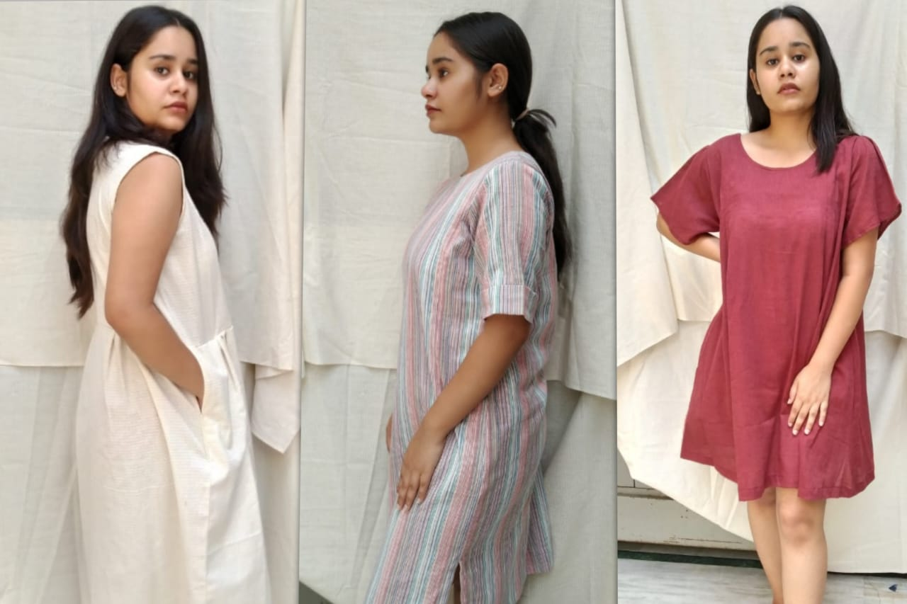

Inspiration for our apparels - A collection for desi Dora, jodhpur. We wanted to design a collection that gave comfort to the wearer demand at any moment. The idea of anti-fit clothing is at its peak as it represents the society that talks about freedom and breaking barrier and also makes the wearer stronger. The silhouettes are mostly relaxed and oversized, designed to keep in mind the overall aesthetic of the brand ( a door to the modern and cultural style of India). We kept the fabrics very light woven and tunics designed with pockets. The leftover fabric scraps were converted into small potlis to make sure that no fabric is wasted.
Our clay jewellery - Two individuals with a passion for creativity -- creativity makes us happy. Started with a dream to embrace things that are made by hand in small quantities. A range of handcrafted clay earrings where each piece is one-of-a-kind and handmade from start to finish and infused with love, energy and handwork into each piece of work. Each earring has a unique story to tell. The bold shapes and colours are used to make you feel even stronger. We aim to keep Indian craftsmanship alive and also help artisans especially women artisans earn their livelihood. The earrings are developed using clay, which makes it lightweight and it doesn’t break.